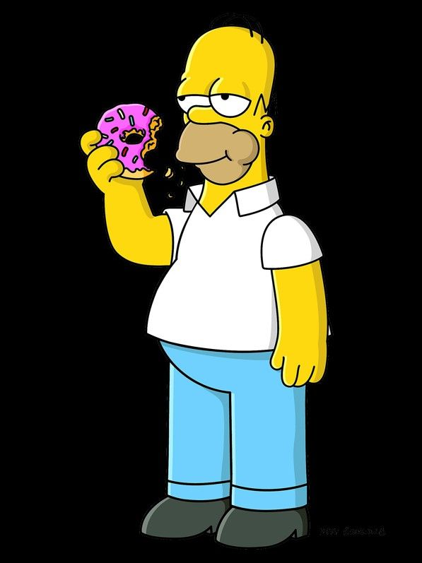
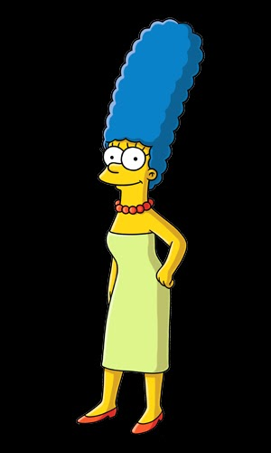
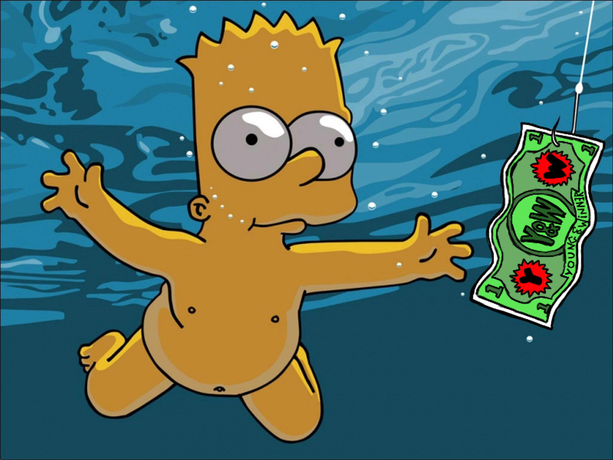
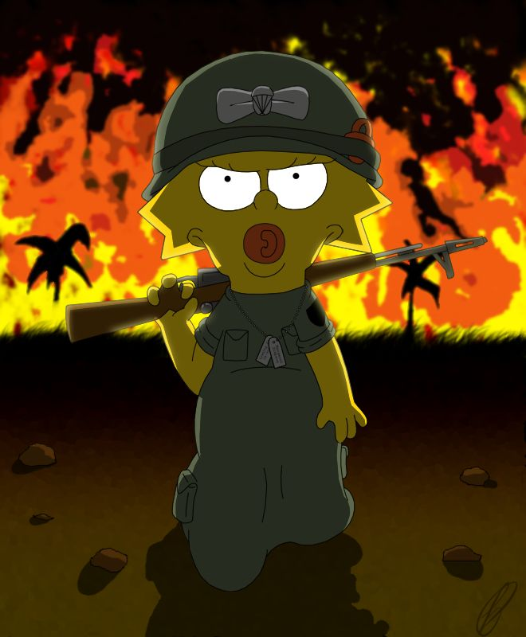

|  | Homer Jay Simpson (Homero J. Simpson en Hispanoamérica y Homer J. Simpson en España) es un personaje ficticio protagonista de la serie de televisión de dibujos animados Los Simpson. Es el padre de la familia protagonista y uno de los personajes centrales y más importantes de la serie. Fue creado por el dibujante Matt Groening e hizo su debut en televisión el 19 de abril de 1987, en el corto Good Night del programa El show de Tracey Ullman. Su segundo nombre es un juego de palabras; durante muchas temporadas no se supo qué había detrás de la J hasta que en el capítulo «D'oh-in' In the Wind» descubre que su segundo nombre es Jay (nombre en inglés de la letra j); de este modo, cuando Homer pronuncia en inglés su propio nombre, no se distingue si da la letra inicial del segundo nombre o este al completo. |
|  | Marjorie Bouvier de Simpson más conocida como Marge Simpson es un personaje ficticio de la serie de televisión de dibujos animados Los Simpson. Es la esposa de Homer Simpson y madre de los tres hijos que ha tenido de este matrimonio: Bart, Lisa y Maggie. Ella, junto al resto de su familia, conforman el elenco de personajes protagonistas de Los Simpson, su presencia ha demostrado ser fundamental para mantener la familia unida. Marge fue creada por el dibujante Matt Groening en el vestíbulo de la oficina de James L. Brooks, para debutar en la televisión el 19 de abril de 1987, en el corto Good Night emitido en El show de Tracey Ullman. |
|  | Bartholomew «Bart» J. Simpson1 (Bartolomeo J. Simpson en Hispanoamérica) es uno de los personajes ficticios protagonistas de la serie de televisión de dibujos animados Los Simpson. Bart tiene diez años y es el primogénito y único hijo varón de Homer y Marge Simpson. Es el hermano mayor de Lisa y Maggie. Este personaje fue creado improvisadamente por Matt Groening y debutó en el corto Good Night de El show de Tracey Ullman el 19 de abril de 1987, originalmente, con la voz de Nancy Cartwright. En Hispanoamérica, Bart ha sido siempre doblado por Marina Huerta, salvo por un lapsus entre la novena y la decimoquinta temporada, que fue interpretado por Claudia Mota y desde la temporada 30, las canciones son interpretadas por Maggie Vera, mientras que en España Sara Vivas le ha puesto regularmente su voz. Bart es uno de los personajes principales de la serie y ha resultado ser uno de los más conocidos en la historia de la animación en la televisión estadounidense. |
|  | Margaret Simpson, conocida como Maggie Simpson, es un personaje ficticio de la serie de televisión de dibujos animados Los Simpson. Es la tercera hija del matrimonio protagonista, Homer y Marge Simpson, y la más joven de ellos. Sus hermanos mayores son Bart y Lisa Simpson. Siempre se la ve succionando un chupete y cuando camina, suele tropezar con el mono y cae de frente. Maggie fue creada por el dibujante Matt Groening en el vestíbulo de la oficina de James L. Brooks, para debutar en televisión el 19 de abril de 1987, en el corto Good Night para el programa El show de Tracey Ullman. |